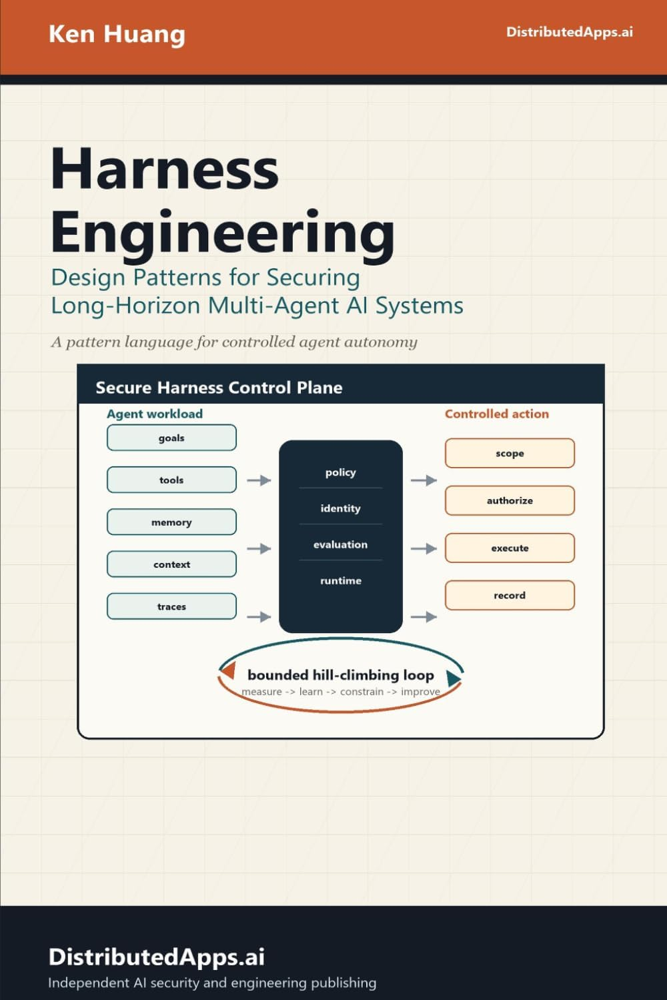
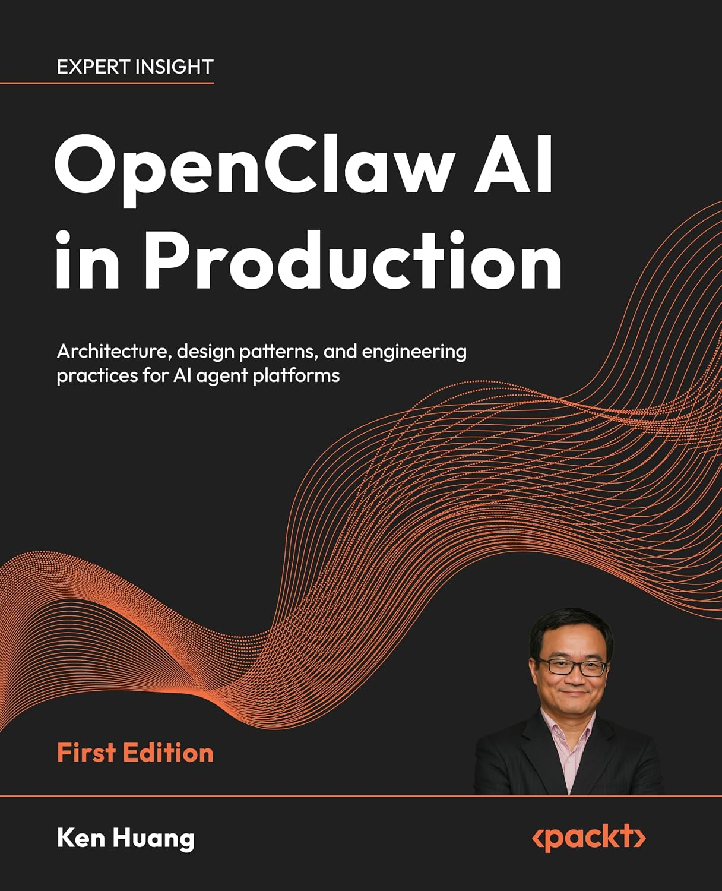
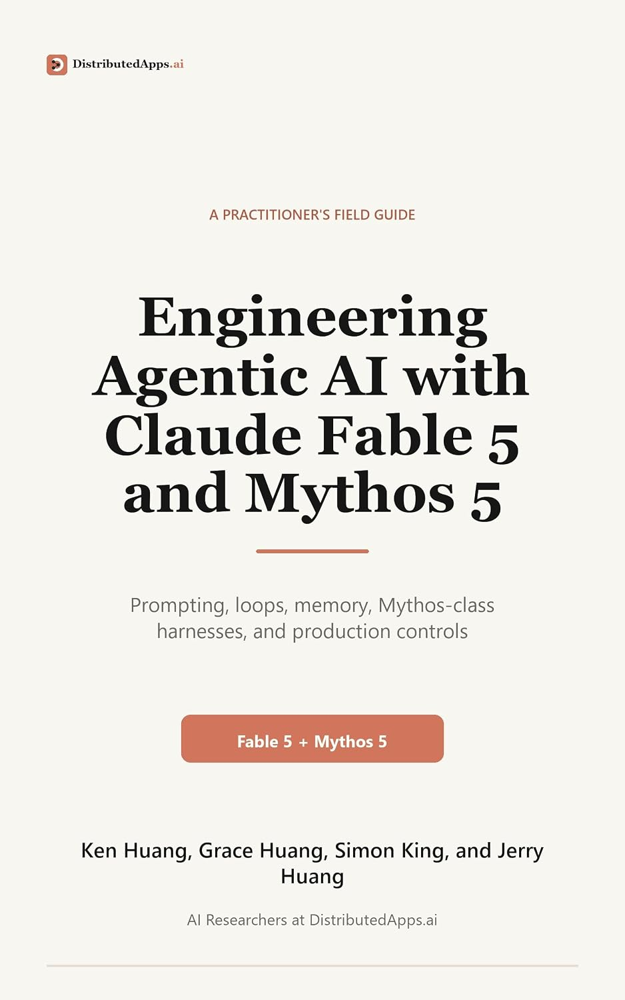
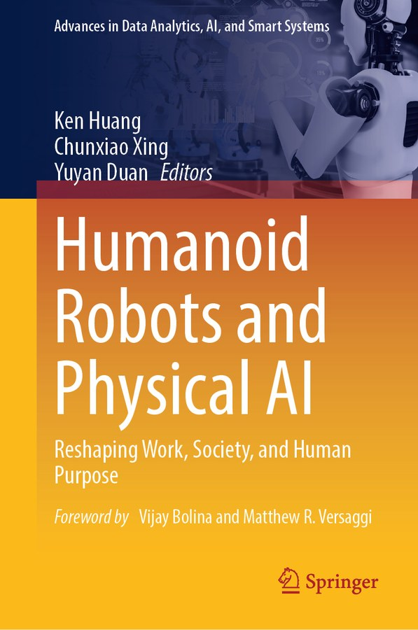

HOW THE CLAUDE CODE TEAM DOES CODE REVIEW
How do you review code at the volume agents produce it? Optimizing for the minimum human review time without raising reverts or incidents.
Addy Osmani, Morgan Westlee Lunt, Qing Wang (Oct 15, 2026)
Presented by Ken Huang, CISSP · Adjunct Professor, University of San Francisco (USF)
Ken Huang, CISSP
- 🎓 Adjunct Professor, USF · AI author (Cambridge, Springer, Wiley, Packt, CMP, PKUP)
- 🛡️ CSA Fellow (MAESTRO, AICM) · OWASP AIVSS Project Lead · WAIC Expert
- 🚀 CEO, DistributedApps.ai · Agentic Security & Multi-Agent Harness Architect








Article Tree & 10 Core Modules
Structured exploration of Addy Osmani, Morgan Westlee Lunt, and Qing Wang's operational blueprint.
Interactive Presentation Controls
Use standard keyboard navigation or top navigation shortcuts:
- H Jump to Slide 1 (Hero & Title)
- M Jump to Slide 3 (Tree Architecture & Modules)
- D Open Official Claude Code Documentation
- T Launch Interactive Terminal Simulator Modal
- F Toggle Native Fullscreen Presentation Mode
Rethinking the Purpose of Code Review
Shifting from an end-of-road human gate to continuous, automated spellcheck while you write.
The 12x Scale Dilemma
In Anthropic's monorepo, daily changes landing leaped from 2,500 in May to over 30,000 in September. Claude writes ~90% of Claude Code's own code.
When shipping this fast, manual line-by-line reading is mathematically impossible. A human-only review model collapses under cognitive exhaustion.
The Two Jobs of Code Review
2. Build shared context and codebase understanding across the team
The core question changes from "Did a human read this code?" to "What could go wrong with this change, and which check is the right one to catch it?"
The Scarce Resource: Human Time and Attention
Minimizing human review time while keeping production reverts and incidents flat.
Cutting review time is counterproductive if bad code simply spills into emergency incident debugging. Automated checks must absorb routine defects.
Essential Harness Terminology Explained
Operational definitions of foundational mechanisms powering agentic continuous delivery.
Merge Queue
PipelineSerializes pull requests by speculatively testing each against the fresh tip of main before merging.
Feature Flags
ReleaseRuntime configuration toggles that decouple code deployment from end-user activation.
Blast Radius
RiskThe maximum operational and business impact if a specific subsystem or diff fails.
Canary & Staged Rings
DeploymentProgressive release topology distributing builds to internal staff, then latest, then stable.
Circuit Breakers
SafetyAutomated telemetry guards that freeze auto-approval when revert or error rates spike.
Fresh-Context Subagents
ReviewIndependent LLM reviewers instantiated with empty conversational memory and strict prompts.
The Life of a Change: Pipeline Overview (FIG A)
FIG A — Most of the path is automated; human attention is concentrated strictly where risk exists.
Layer by Layer: Six Concentric Defense Tiers (FIG B)
FIG B — Six layers of checks with instant rollback underneath. Few bugs bypass all six.
Defense in Depth Rationale
- 1. Pre-PR Verification (Tests, build, simulator screenshots)
- 2. Required CI (Multi-platform compile, lint, unit tests)
- 3. AI Code Review (Parallel bug hunting, consensus verifier voting)
- 4. Security Review (Specialized pass, open findings block merge)
- 5. Human Approval (Risk-tiered signoff, prompter accountability)
- 6. Merge Queue & Flags (Serialized retest, employee canary rings)
Layer 1: Pre-PR Verification & Contract Files
Most code review happens before a pull request ever exists.
"Giving Claude a way to verify its work is probably the most important thing for good results. It makes the final result 2x to 3x better." — Boris Cherny, Creator of Claude Code
CLAUDE.md: Project Global Context
Defines tech stack, conventions, architectural goals, and non-goals. Loaded on every single agent interaction. Flags broken conventions and stale specifications.
REVIEW.md: Module-Specific Failure Definitions
Authored by subsystem owners. States explicitly what failure looks like ('it lies' for docs, 'it misroutes' for router). Caps nits, skips noise paths, and demands line-item evidence.
Pre-PR Autonomous Skills
Local skills run bug hunters, diff simplifiers, and end-to-end behavior checks. Headless phone/browser simulators capture visual proof before PR creation.
Layer 2: Multi-Agent AI Review & Consensus Voting
Parallel bug-hunting agents paired with independent voting verifiers eliminate review fatigue.
Multiple agents explore the diff in parallel against repository history. A separate group of verifier agents votes on each proposed finding; only consensus items are posted.
A/B-Tested Noise Suppression
Cosmetic style, speculative diagnostics, and trivial cleanup are discarded. Remaining findings are tagged as Important, Nit, or Pre-existing to avoid blaming the current author.
Every finding must be addressed—either fixed in code or closed with technical reasoning. Overnight agents frequently pick up and resolve open threads.
Layers 3 & 4: Security Review & Required CI Gates
Security gets a standalone automated pass, backed by multi-platform matrix CI.
Automated Security Review That Blocks
PRs cannot merge while any finding from the bug review or security review is open. Available via /security-review and the open-source GitHub Action.
Findings automatically clear when subsequent commits remediate the vulnerability, or authors clear false positives with a written justification.
Required Multi-Platform CI Gates
Exhaustive matrix runs linting, strict static type checks, cross-platform tests (macOS, Linux, Windows), and binary packaging before human review.
PR template enforces explicit testing evidence and clear rollback procedures signed off by the engineer.
Layer 5: Risk-Based Human Approval Matrix
The change sets the risk tier, not the author. Dual classifiers evaluate blast radius.
| Risk Tier | Code Surface & Blast Radius | Required Human Approvals |
|---|---|---|
| Low Risk | Docs, copy, internal features, additive changes behind flag | None required (Zero-human merge once CI/AI green) |
| Medium Risk | Standard product changes, caching, auto-updater, prompts | One person (Author or designated reviewer) |
| High Risk | Auth, billing, CI workflow files, installer binaries | Two people (Mandatory peer code owners) |
Layer 6 & Rollback: Merge Queue, Flags & Instant Rollback
Re-running checks on latest main prevents combined merge failures; flags isolate risk.
Merge Queue Retesting
Serializes pull requests and re-runs checks against the fresh tip of main, preventing semantic race conditions between concurrently passing PRs.
Internal Dogfooding via Feature Flags
New features deploy behind flags to Anthropic employees first. Heavy real-world internal usage exposes edge cases before public distribution.
Staged Ring Releases
Builds ship to latest channel first while stable channel trails. Telemetry anomalies trigger instant flag shutoff without code redeploy.
Weekly On-Call & Blameless Post-Mortems
On-call engineers monitor revert dashboards. Every incident triggers an inquiry: 'Which inspection layer should have caught this?'
How We Make Reviewers Better: Incidents as Daily Evals (FIG C)
FIG C — Incidents and reverts are immediately transformed into permanent regression benchmark tests.
Measuring Noise & Comment Outcomes
Every reviewer comment is tracked across 4 developer actions: (1) Fixed it, (2) Said it was wrong, (3) Intentional behavior, (4) Nit/didn't matter.
Benchmarking on Known-Clean PRs
The reviewer is regularly evaluated against historically clean PRs to measure false positives that would cause harmful churn. Priority: Catch real bugs first, cut rounds second.
Convergence Engineering & Anti-Ping-Pong Loops (FIG D)
FIG D — Agent authors and agent reviewers can loop indefinitely without strict convergence protocols.
An agent author and reviewer went through >50 rounds overnight. Git blame revealed 59% of flags were pre-existing legacy code, not new bugs from the diff.
FIG D Empirical Impact
Where Humans Stay in the Loop
Preserving senior engineering attention for high-leverage decisions only humans can make.
Direction, Taste & Scope
Deciding whether to build it at all. Asking 'Should we even do this?' stops over-engineering and keeps product scope focused.
High-Risk Code Scrutiny
Dedicated human auditing for mission-critical surfaces: billing transactions, auto-updaters, and CI/CD deployment definitions.
Architectural Precedents
Reviewing core design patterns that subsequent agents and engineers will copy as canonical implementation models.
Reading Empirical Evidence
Scrutinizing test runner output, bash logs, simulator screenshots, and verification artifacts rather than guessing from diffs.
Sharing Context Across the Team
Replacing line-by-line reading with on-demand slice explainers and visual learning artifacts.
Dispelling the Monolithic Mental Model
In a 30,000-daily-change monorepo, nobody holds the entire codebase in their head—and attempting to do so is a waste of human bandwidth.
On-Demand Slice Explainers
When preparing to modify a subsystem, developers ask Claude to generate an explainer for that exact slice. It takes minutes and reflects today's code.
Interactive Visual Artifacts
Claude compiles custom visual architecture diagrams and pedagogical artifacts tailored to each engineer's preferred mental model.
Ambient Slack Awareness
Development defaults to public Slack channels where teammates observe pull requests, designs, and discussions in real time.
'You Land It, You Own It': Reversibility Without Blame
The engineer directing the agent owns the outcome, supported by total operational reversibility.
When We Change Direction: Zero Sunk Cost
Because agent-written code is cheap and fast to produce, teams pivot without emotional friction.
Enterprise Adoption Playbook & Where This Is Going
A 4-phase rollout blueprint, dynamic zero-human merge boundaries, and automated circuit breakers.
The Moving Boundary & Future Direction
Anthropic continues shifting low-risk paths toward zero-human merges while engineering automated circuit breakers. When reviews miss bugs, fixes are codified into CLAUDE.md and skills.